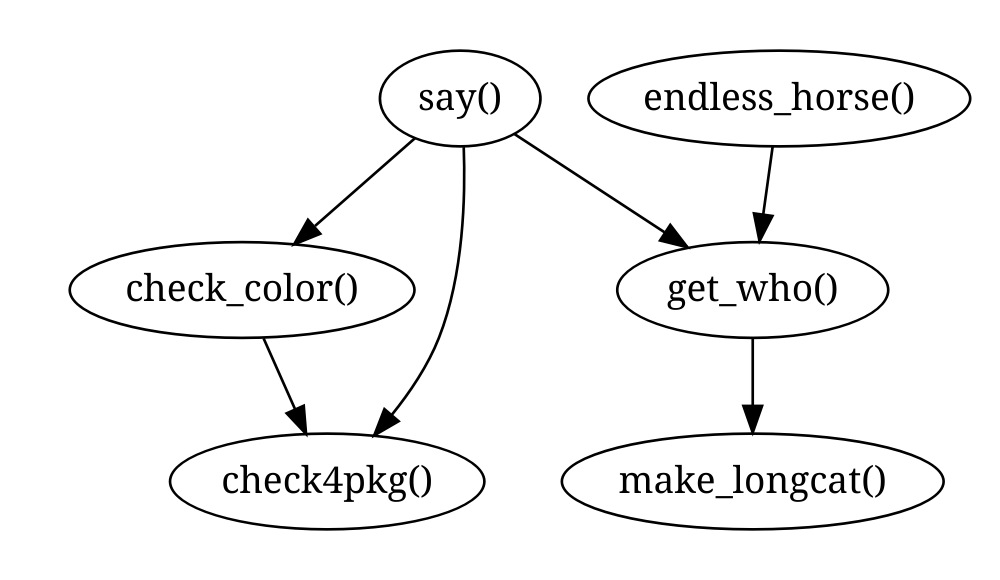

foodwebr makes it easy to visualise the dependency graph of a set of functions (i.e. who calls who). This can be useful for exploring an unfamiliar codebase, or reminding yourself what you wrote ten minutes ago
Basic usage
Say we have a bunch of functions in the global environment, some of which call each other:
library(foodwebr)
#> Warning: replacing previous import 'vctrs::data_frame' by 'tibble::data_frame'
#> when loading 'dplyr'
f <- function() 1
g <- function() f()
h <- function() { f(); g() }
i <- function() { f(); g(); h() }
j <- function() j()A call to foodweb() will calculate a graph of the dependencies.
fw <- foodweb()Printing the object will show the graphviz representation:
fw
#> # A `foodweb`: 5 vertices and 7 edges
#> digraph 'foodweb' {
#> f()
#> g() -> { f() }
#> h() -> { f(), g() }
#> i() -> { f(), g(), h() }
#> j() -> { j() }
#> }Plotting will draw the graph.
plot(fw)
foodweb() looks at its calling environment by default. If you want to look at another environment you can either pass a function to the FUN argument of foodweb() or pass an environment to the env argument. If FUN is provided then the value of env is ignored, and the environment of FUN will be used.
Filtering
If a specific function is passed to FUN, the default behaviour is to remove functions that are not descendants or antecedents of that function.
# `j()` will not be included
foodweb(FUN = g)
#> # A `foodweb`: 4 vertices and 6 edges
#> digraph 'foodweb' {
#> g() -> { f() }
#> h() -> { g(), f() }
#> i() -> { g(), h(), f() }
#> f()
#> }
# Force inclusion of unconnected functions by using `filter = FALSE`
foodweb(FUN = g, filter = FALSE)
#> # A `foodweb`: 5 vertices and 7 edges
#> digraph 'foodweb' {
#> f()
#> g() -> { f() }
#> h() -> { f(), g() }
#> i() -> { f(), g(), h() }
#> j() -> { j() }
#> }You can use this feature when exploring code in other packages: calling foodweb() on a function in another package will show you how functions in that package relate to each other. I’m using cowsay here as it’s small enough that the output is readable.
By default when calling foodweb() on a specific function we only see functions that are in the direct line of descendants or antecendents of the specified function.
if (requireNamespace("cowsay", quietly = TRUE)) {
plot(foodweb(cowsay::say))
}
If we want to include all functions in the package, we can pass filter = FALSE:
if (requireNamespace("cowsay", quietly = TRUE)) {
plot(foodweb(cowsay::say, filter = FALSE))
}
graphviz as text
In case you want to do something with the graphviz output (make it prettier, for example), use as.text = TRUE. This returns the graphviz specification as a character vector.
foodweb(as.text = TRUE)
#> digraph 'foodweb' {
#> "f()"
#> "g()" -> { "f()" }
#> "h()" -> { "f()", "g()" }
#> "i()" -> { "f()", "g()", "h()" }
#> "j()" -> { "j()" }
#> }Calling as.character() on a foodweb object will have the same effect.
Using tidygraph
The tidygraph package provides tools for graph analysis. A foodweb object can be converted into a tidy graph object using tidygraph::as_tbl_graph() to allow more sophisticated analysis and visualisation.
if (requireNamespace("tidygraph", quietly = TRUE)) {
tg <- tidygraph::as_tbl_graph(foodweb())
tg
}
#> # A tbl_graph: 5 nodes and 7 edges
#> #
#> # A directed multigraph with 2 components
#> #
#> # Node Data: 5 x 1 (active)
#> name
#> <chr>
#> 1 f
#> 2 g
#> 3 h
#> 4 i
#> 5 j
#> #
#> # Edge Data: 7 x 2
#> from to
#> <int> <int>
#> 1 2 1
#> 2 3 1
#> 3 3 2
#> # … with 4 more rowsHow does it work?
Understanding the algorithm is important as there are some key limitations to be aware of. To identify the relationships between functions, foodwebr:
- Lists all the functions in an environment.
- Tokenises the
body()of each function. - Compares each token against the list of function names.
- If a token matches a function name, (i.e. the name of function B appears in the body of function A), records a link from A to B.
This last point leads to the possibility of name masking, where a function contains an internal variable that matches the name of another function in the environment. This will lead to a false link.
For example:
f1 <- function() {
1
}
f2 <- function() {
f1 <- 10 # This variable `f1` will be confused with the function `f1()`
2
}
# The foodweb mistakenly believes that function `f2()` calls function `f1()`
foodweb()
#> # A `foodweb`: 2 vertices and 1 edge
#> digraph 'foodweb' {
#> f1()
#> f2() -> { f1() }
#> }If you know how to fix this please leave a comment in #2.
See also
foodwebr is similar to these functions/packages:
-
mvbutils::foodweb(): The OG of function dependency graphs in R, and the inspiration for foodwebr. Less user-friendly output, in my opinion. -
DependenciesGraphs: Provides much nicer visualisations but does not appear to be actively maintained.